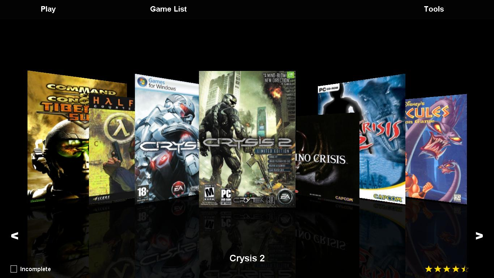
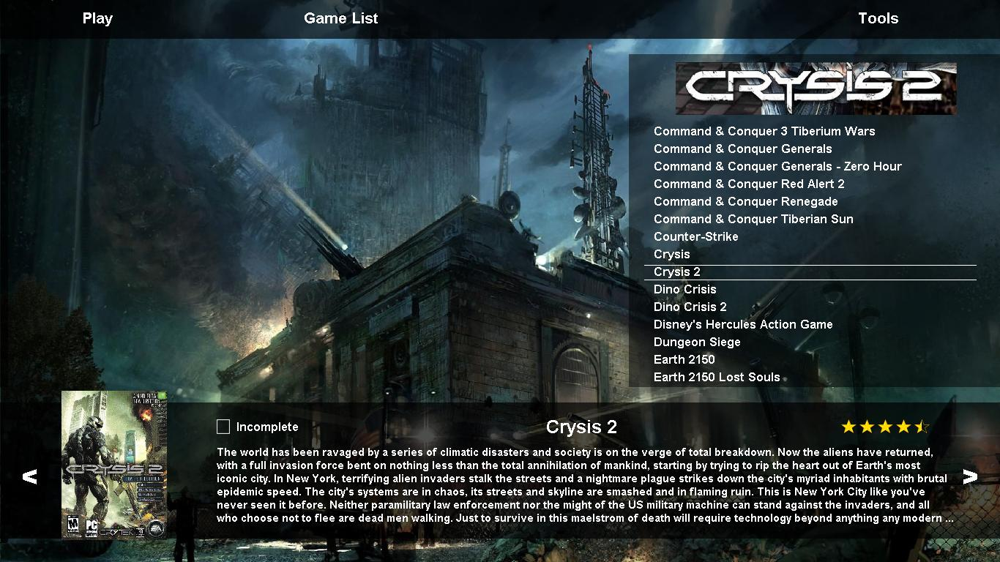
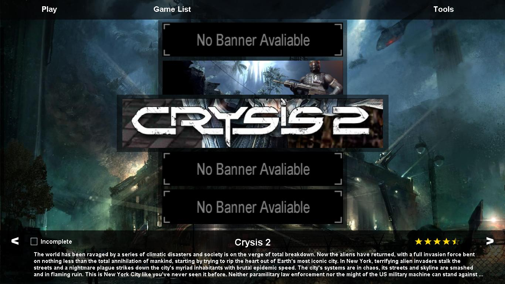
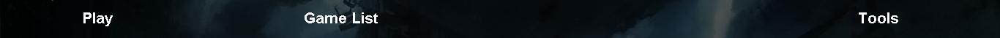
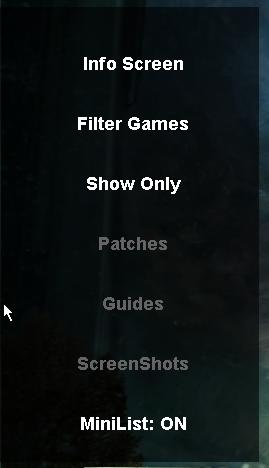
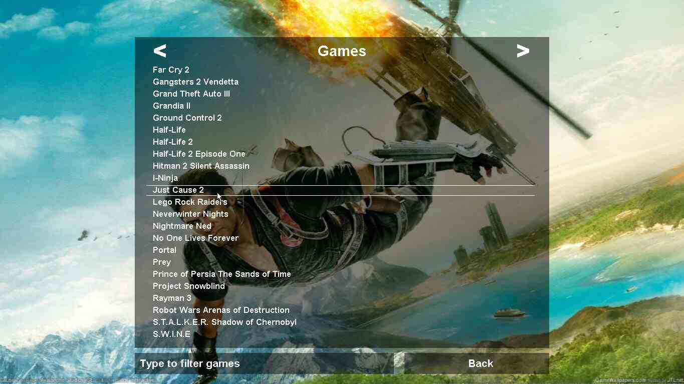
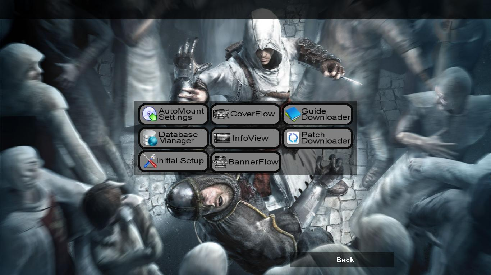
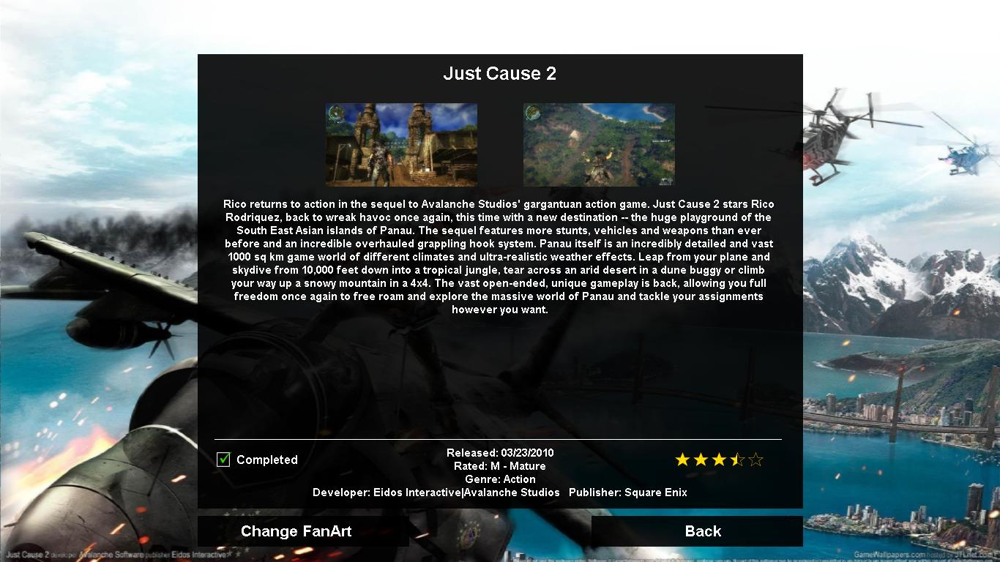
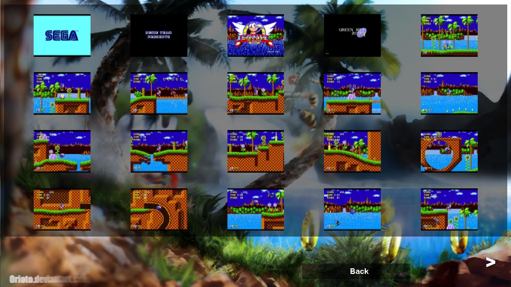

Index
Function
Program
Interface
Menus
Keys
The FrontEnd is the main program contained within the GameManager package, it is the program that runs, patches, sorts and showcases your games. Most of GameManagers features can be accessed from this program.
The Program has three main interfaces CoverFlow, NormalView and BannerView which can both be accessed from the Tools Menu.
Cover Flow

NormalView

BannerView

Despite the three very different viewing modes the
interface is generally the same.
Left clicking on the Cover art
will make it go full screen.
Right clicking makes the Cover flip
to reveal back art. Note all games with back art display this icon on
there front cover:
Left
clicking on the background hides all the interface, showing only the
backdrop until the mouse is moved again.
Also note the 5 Star
rating and Completed tick box, clicking on each of these changes the
games rating/completed status respectively.
There are two main menus within FrontEnd. Lets take a closer look at the first menu:

Play – Starts
the selected game
Game List – Brings
up the list of all indexed games and allows you to filter by keyword,
see Game List
Tools –
Brings up a full screen menu, see
Tools
The second menu is a bit harder to find as it automatically hides, hover your mouse over the left edge of the screen and the menu will pop out revealing something like below:

Items
that are grey are unavailable, they are usually unavailable due to
there not being any local patches or guides or screen shots. Lets
take a closer look at what each item does:
Info Screen –
Brings up the info screen, see Info Screen
Filter Games – Brings up a list of ways to sort
your games
Show Only – Brings up a list of platforms
that can be used to filter games
Patches – Brings up
a list of patches downloaded and allows you to run them, also see
PatchDownloader
Guides –
Brings up a list of Guides/Walkthroughs and allows you to view them,
also see WalkthroughDownloader
ScreenShots
– Brings up a screen of screenshots, see ScreenShot
Screen
The last menu item changes depending on what viewing mode you are on, if you are in infoview then you can click on MiniList: ON/OFF to toggle whether to show the mini list at the right of the screen. If you are in BannerView you can click Backdrop: ON/OFF to turn the backgrounds on or off.

This
shows a list of all your indexed games, by clicking the arrows you
can go back and forward a page, note they disappear when you are on
the first or last page. By typing on the keyboard you can filter the
list by a keyword, anything you type will appear in the 'Type to
filter games' box, press backspace to delete characters from your
keyword. Clicking on any game name will take you to that games page
and hovering your mouse over each game will change the background to
that games fan art. Should you wish to return to the game you were on
previously just click the 'Back' button.
Tools
When
you click tools you will see a menu like below.

The
left buttons loads the AutoMount Program, see AutoMount,
Database Manager, see DatabaseManager,
and initial setup.
The middle buttons change the viewing mode to
each specified interface.
The right buttons launch the Walkthrough
Downloader and Patch Downloader
respectively

When you press the 'i' key you will see this screen, it
shows you more info about the game and allows you to change the fan
art (background) of the game, simply click the 'Change FanArt' button
and then select your desired fan art (a preview is shown to the
right).
Note: Newly selected
fanart will not become active until FrontEnd is restarted.
When you click ScreenShots from the menu you will be presented with this screen.

The
number of screen shots will change depending on how many you have
taken and you can move to the next page by using the arrows at the
bottom left and right of screen. You can add screen shots by pressing
the global hotkey (set using Setup.exe) in-game while SilentRunner
is running in the background.
Also clicking on the images makes
them get bigger and fill the screen and moving mouse reduces there
size back to original.
Keys
[Main Screen]
1
(one) – Flips Cover
+
- Toggle full screen view of
covers
L – Brings
up Game List
F – Brings
up the game filter menu
S – Brings
up the show only menu
I – Brings
up/Closes the game info screen
T – Brings
up Tools menu
F1 – Online
Help
F12 – Starts
Setup program
Enter – Starts
currently selected game
Left/Right – Changes
selected game
Up/Down – Changes
selected game
ESC – Closes
Program or closes uppermost window like filter window
[Game
List][Filter Menu][ShowOnly Menu]
Left Arrow –
Changes page to previous one
Right
Arrow – Changes page to
next one
Up Arrow – Changes
selected game on list
Down Arrow – Changes
selected game on list
ESC – Exit
list without selecting a game
Enter – Select
game
[Info
Screen]
ESC – Exit
screen
I – Exit
screen
1 (one) - Toggle
full screen view of screen shot 1
2 (two) - Toggle
full screen view of screen shot 2
[Tools
Menu]
G – Walkthrough
Downloader
A – AutoMount
Settings
P – Patch
Downloader
C – Toggle
Viewing Mode
ESC – Exit
Menu